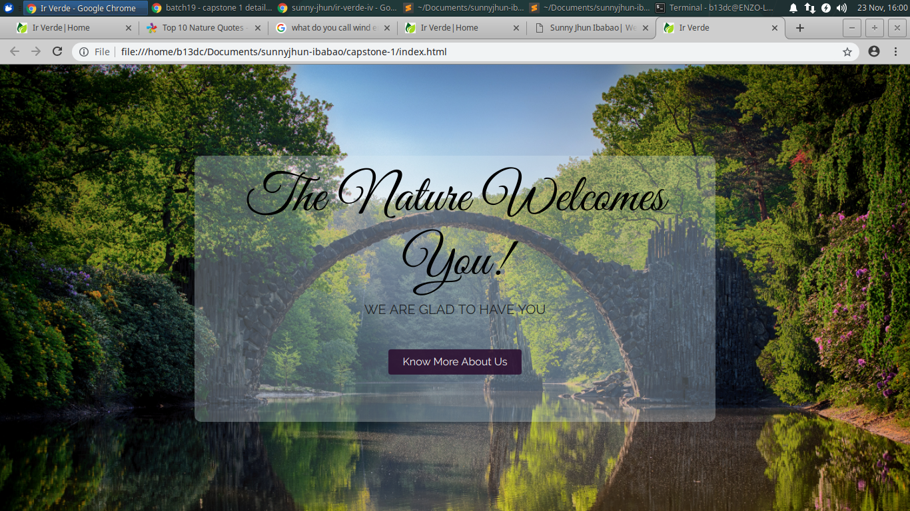

Ir Verde
Ir Verde is an institutional website that aims to promulgate environmental advocacy. The incorporation of digital based information is very essential in today's method of spreading the organisation's guiding principle.

Capstone2
This text describes my websites
Capstone3
This text describes my websites